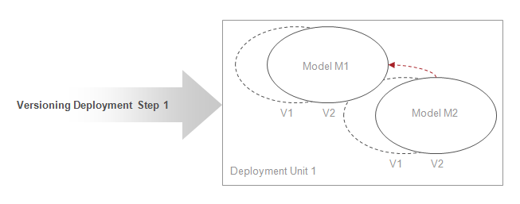

Figure: Build Version Sphere from Leaves
Stardust allows to deploy different models into one runtime. In case a model is being deployed, all models that the model to be deployed is using have to be deployed already, otherwise deployment errors occur.
Stardust allows maintaining multiple revisions of a process model as model versions. For information on handling multiple versions at runtime in general, please refer to the chapter Working with Multiple Versions.
Versioning at deployment time occurs on deployment level. Successor versions of a model can always be deployed into the runtime regardless of whether they implement all elements exposed by its predecessor versions or the shared model elements referenced by other models in the runtime. A warning occurs nevertheless at deployment time if the model does not implement all of the model elements exposed by its predecessor version and currently referenced by other models deployed.
In case a new version of a provider model is deployed, a new version of the consumer model is created to reference to this new version. This is illustrated in the following figure:
Figure: Build Version Sphere from Leaves
In case of multiple provider versions, the following procedure is used during the deployment of a consumer model:
It will be determined which version of referenced process models a version of a model is referring to. The following scenarios apply:
In the following scenario, the successor version of the referencing model V2 is deployed first. Later, a new version of the library is deployed. The reference remains attached to Version 1 of the referenced library (default case):
Figure: Versioning Scenario
In this scenario, version V2 of the referenced model M1 is deployed. Then a successor version V2 of the referencing model M3 is deployed. Reference is bound to version V2 of M3:
Figure: Versioning Scenario
In the last scenario, the successor version of both models is deployed in one deployment unit and references are created between these:

Figure: Versioning Scenario
Changing a process interface primary implementation on running process instances can be handled by ignoring the changed primary implementations.
Instances of process hierarchies already running at the time of rebinding will continue to run in the model version tree that existed when the root process instance was started. This is the default behavior for rebinding of references. The following figure illustrates this handling:
Figure: Handling of Running Instances
Note that the following deployment cases are not supported for multi model:
Cyclical references are not allowed between models, even not within one deployment unit. This means that a model using model elements from another model cannot be also referenced by the other model.
Cyclical references are for example a model using
Cross-partition deployment and model references across partitions are not supported.
You have the option to select multiple models to be deployed at a time.
Multiple deployments of different models are possible unless they result in dangling or circular model references. Different model files with identical model IDs are considered versions of the same model. They can be deployed as new versions of the model already deployed.
Multiple models can be displayed in one single deployment step, as illustrated in the figure below:
Figure: Deploying multiple models in a single
deployment step.
Models can be deployed in read-only state to support the delivery of base library models or models having process skeletons into customer deployments and to ensure, that the customer is not overwriting these.